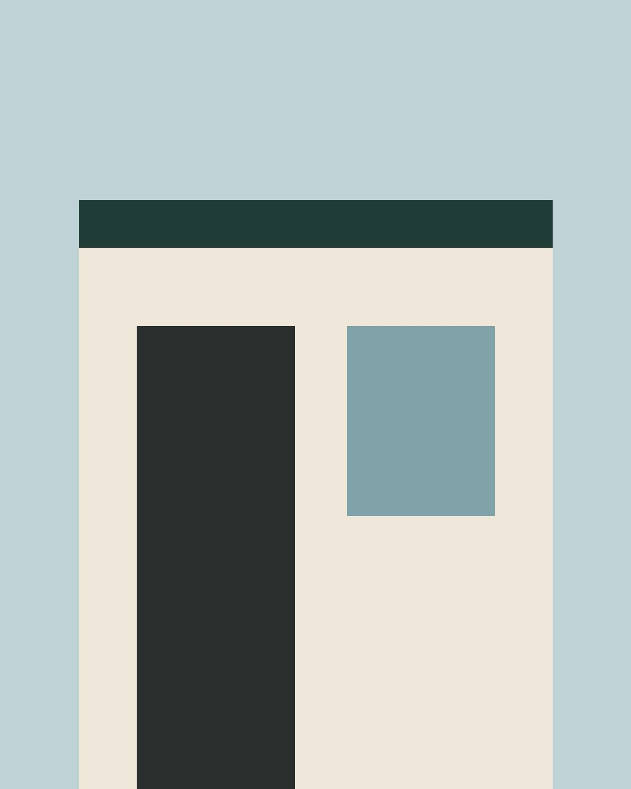
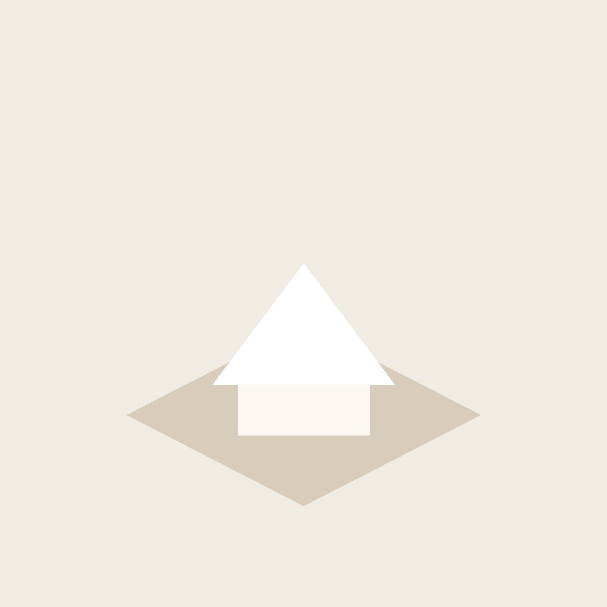
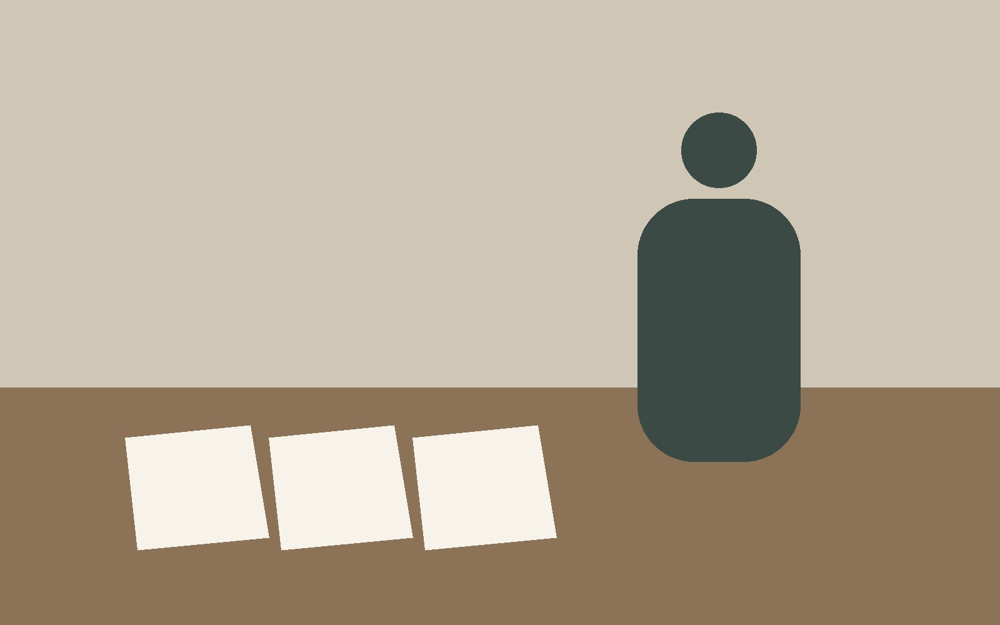
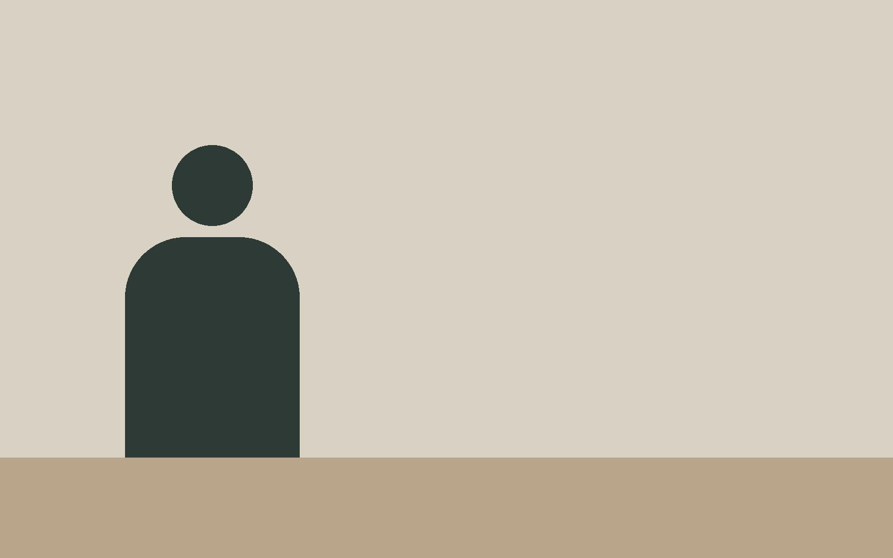
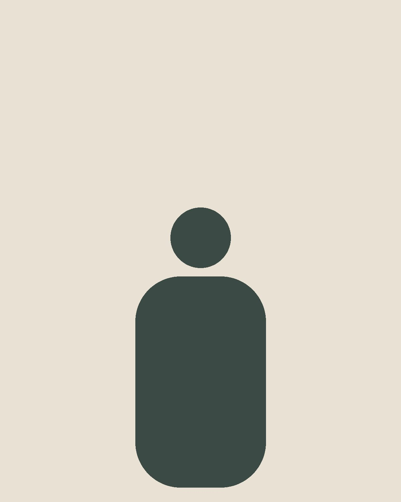
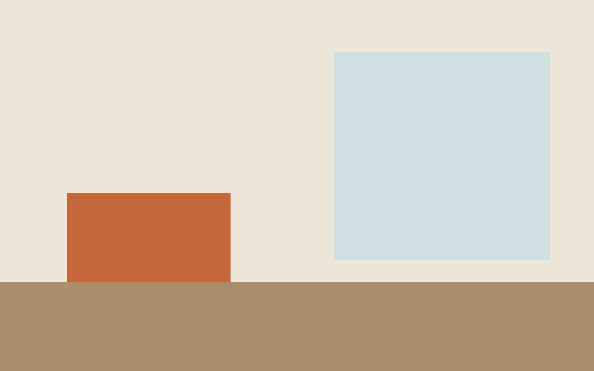
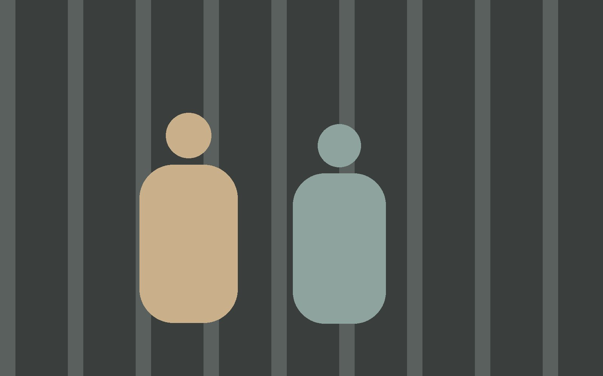

Estúdio Buriti
Logotipo
logo-buriti.svg · no claro
logo-buriti.svg · no escuro
Cores
areia
#F6F1E8
Fundo padrão de posts, slides e documentos.
Origem: proposed: fundo do feed (#F4EDE2, medido) clareado um passo para servir de papel
areia-funda
#E9DFCF
Cartões, faixas e blocos sobre areia.
Origem: proposed: tom mais escuro da areia para cartões e faixas
tinta
#1C2422
Texto corrido e títulos sobre areia.
Origem: proposed: quase preto esverdeado, no lugar do preto puro
tinta-suave
#5C6661
Legendas, rodapés e texto de apoio.
Origem: proposed: texto de apoio, conferido sobre areia
verde-buriti
#1F3D36
Cor principal: capas, títulos de destaque e fundo de fechamento. É o único verde da marca.
Origem: file: logos/logo-buriti.svg (texto do logotipo)
argila
#C4673A
Destaque em traço, ícone e título grande (24px ou mais). Nunca em texto corrido.
Origem: file: logos/logo-buriti.svg (símbolo da palmeira)
argila-texto
#A34E24
Palavra de ênfase e link dentro de texto corrido sobre areia.
Origem: proposed: argila escurecida, porque a argila do logo dá 3,49:1 sobre areia e não serve para texto
Pares de texto conferidos
| Texto sobre fundo | Contraste (Claro) | Mínimo |
|---|---|---|
| tinta / areia | 14.1:1 | 4.5:1 |
| tinta / areia-funda | 12.0:1 | 4.5:1 |
| tinta-suave / areia | 5.3:1 | 4.5:1 |
| verde-buriti / areia | 10.5:1 | 4.5:1 |
| areia / verde-buriti | 10.5:1 | 4.5:1 |
| argila-texto / areia | 5.1:1 | 4.5:1 |
| argila / areia | 3.5:1 | 3:1 (texto grande) |
Tipografia
capa
Títulos · "Fraunces", Georgia, serif
88px · 1.04 · 700
titulo
Títulos · "Fraunces", Georgia, serif
56px · 1.1 · 700
subtitulo
Títulos · "Fraunces", Georgia, serif
36px · 1.2 · 400
corpo
Texto · "Inter", system-ui, Arial, sans-serif
32px · 1.4 · 400
rotulo
Texto · "Inter", system-ui, Arial, sans-serif
22px · 1.2 · 700
legenda
Texto · "Inter", system-ui, Arial, sans-serif
20px · 1.35 · 400
Espaçamento e raio
| Token | Valor | Uso |
|---|---|---|
espaco-1 | 8px | Entre rótulo e título. |
espaco-2 | 16px | Dentro de cartões. |
espaco-3 | 32px | Entre blocos. |
margem-feed | 72px | Margem lateral de post 1080x1350. |
raio-pequeno | 4px | Etiquetas. |
raio-medio | 12px | Cartões e fotos. |
raio-pilula | 999px | Botões e selos. |
Livro da marca
Estúdio Buriti
Empresa fictícia, criada para este exemplo. Nomes, números e fotos são inventados.
Quem é a marca
O Estúdio Buriti projeta reformas de casas para famílias de Campinas que querem morar melhor sem sair do bairro. Aparece mais no Instagram e em propostas enviadas em PDF. Quer ser percebido como sóbrio, próximo e contemporâneo. Não quer parecer frio.
Voz
- Primeira pessoa do plural: "projetamos", "visitamos a obra".
- Frases curtas. Uma ideia por frase.
- Fala de casa e de rotina, não de metragem: "a cozinha onde a família cabe inteira".
- Sem emoji no texto da arte. Na legenda, no máximo um.
- Chamada para ação sempre concreta: "peça a visita técnica pelo link da bio".
Cores
| Cor | Onde entra | Onde não entra |
|---|---|---|
areia | Fundo de quase tudo | Texto |
verde-buriti | Capas, títulos de destaque, fundo de fechamento | Texto pequeno sobre foto |
argila | Traço, ícone, título a partir de 24px | Texto corrido |
argila-texto | Palavra de ênfase dentro de um parágrafo | Fundo |
tinta e tinta-suave | Texto | Fundo |
Um verde só. Os verdes #2B5A4E e #3E6B4F que apareciam no feed saem de uso.
Tipografia
- Títulos em Fraunces. Texto em Inter.
- No post 1080x1350, corpo a partir de 32px e rótulo a partir de 22px.
- Nada de caixa alta em título. Caixa alta só no rótulo.
Logotipo
- Arquivo original:
logos/logo-buriti.svg. Não redesenhar, não distorcer, não trocar a cor. - Fundo certo:
areiaou branco. Sobreverde-buritifalta a versão clara do logo, que ainda não existe. - Área livre em volta igual à altura da letra B. Largura mínima de 160px na tela.
Fotografia
- Luz natural e clara, fundo limpo, tons de areia e madeira.
- Pessoas trabalhando valem mais que pessoas posando.
- Fotos de obra com cliente só com autorização por escrito, e ficam marcadas no acervo.
- Acervo e busca:
photos/index.json.
Superfícies
| Peça | Tamanho | Regra |
|---|---|---|
| Post e carrossel | 1080x1350 | Capa em verde-buriti, miolo em areia, fechamento em verde-buriti |
| Capa de proposta | A4 | Fundo areia, logo no topo à esquerda, título em Fraunces |
| Slide | 1920x1080 | Fundo areia, um título por slide |
Estado da jornada
- 2026-11-10: diagnóstico, coleta e dissecação concluídos.
- 2026-11-10: direção escolhida: evoluída.
- 2026-11-11: 7 fotos indexadas (1 retrato, 1 meio-corpo, 1 trabalhando, 1 fachada, 1 ambiente, 1 produto, 1 grupo).
- Pendente: versão clara do logotipo; retrato horizontal com a sócia Lia; fotos de obra pronta.
Acervo de fotos

f001
Ilustração sintética: fachada do estúdio com faixa verde da marca, céu limpo acima.
storefrontverticalespaço para texto: goodcoverauthority
f002
Ilustração sintética: maquete branca de casa sobre base clara, fundo neutro.
productsquareespaço para texto: someproductcarouselproof
f003
Ilustração sintética: Marina à mesa de projeto com três pranchas de desenho.
at-workhorizontalespaço para texto: somebackstagecarousel
f004
Ilustração sintética: Marina à esquerda, parede clara livre à direita para título.
half-bodyhorizontalespaço para texto: goodslide-backgroundauthoritycover
f005
Ilustração sintética: retrato vertical de Marina em parede areia, espaço livre no topo.
portraitverticalespaço para texto: goodbiocovervideo-covermelhor do grupo
f006
Ilustração sintética: sala de reunião com janela ampla e sofá na cor argila.
spacehorizontalespaço para texto: goodslide-backgroundcarousel
f007
Ilustração sintética: visita à obra com cliente, ambiente escuro e carregado.
grouphorizontalespaço para texto: nonebackstageproofconferir antes de publicar: client-or-patient